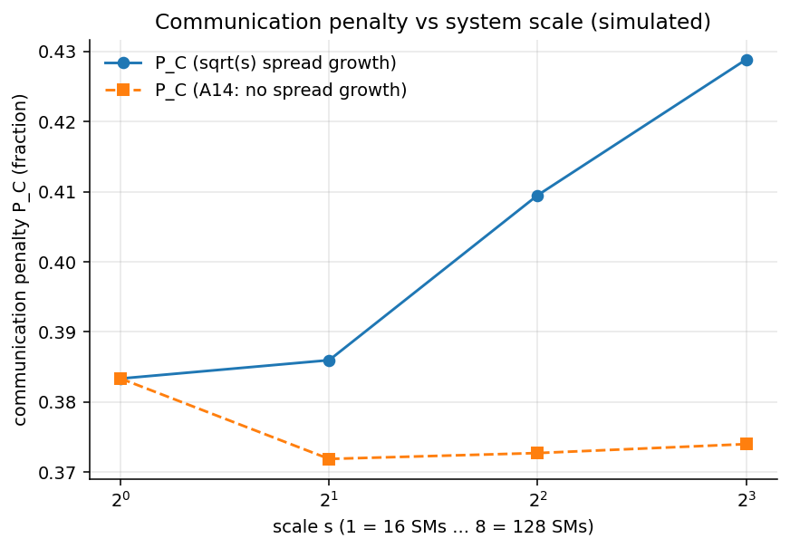
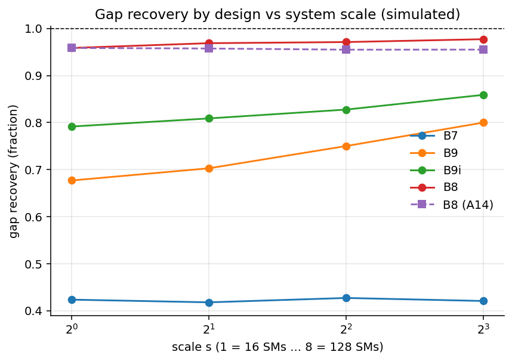
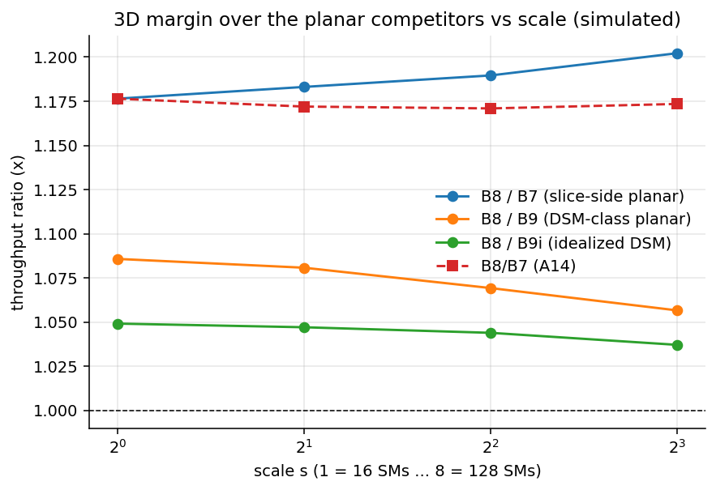
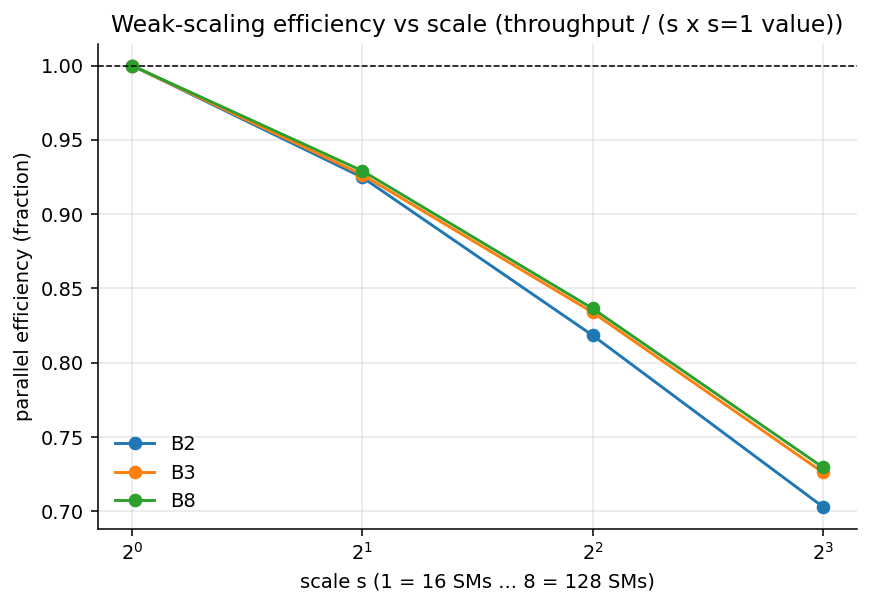
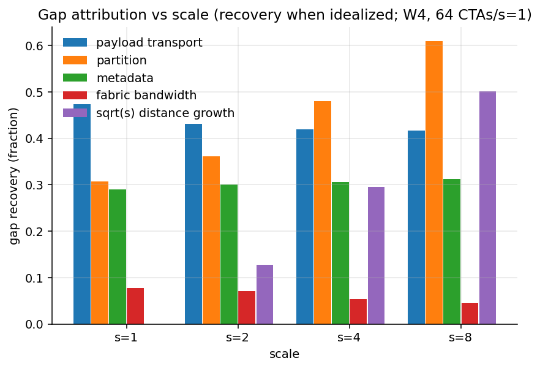
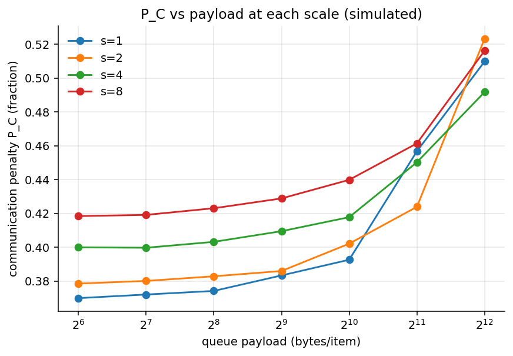
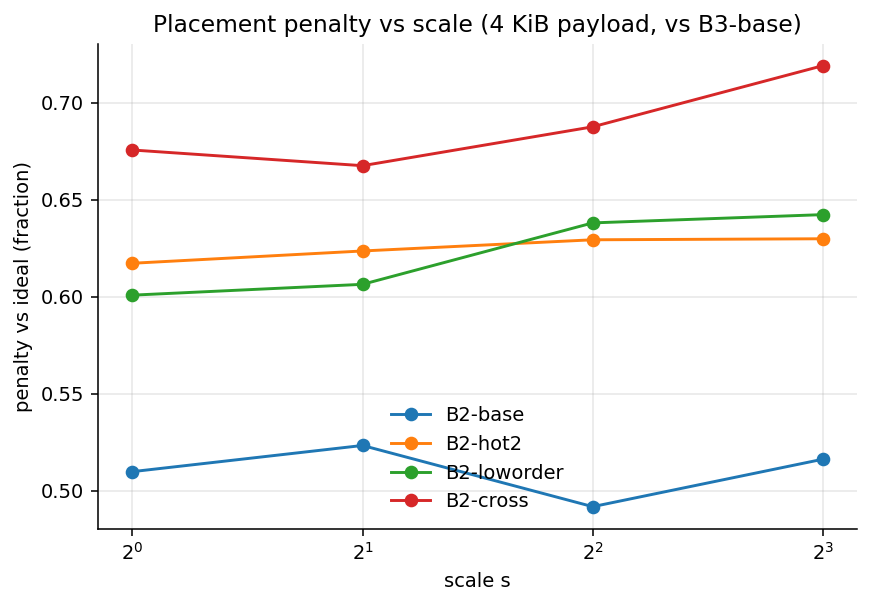
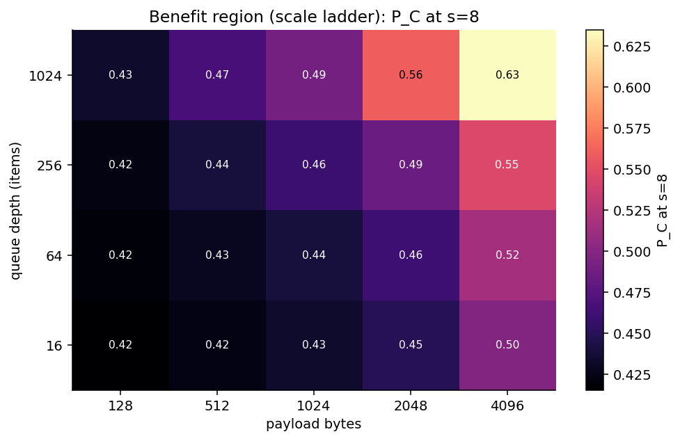
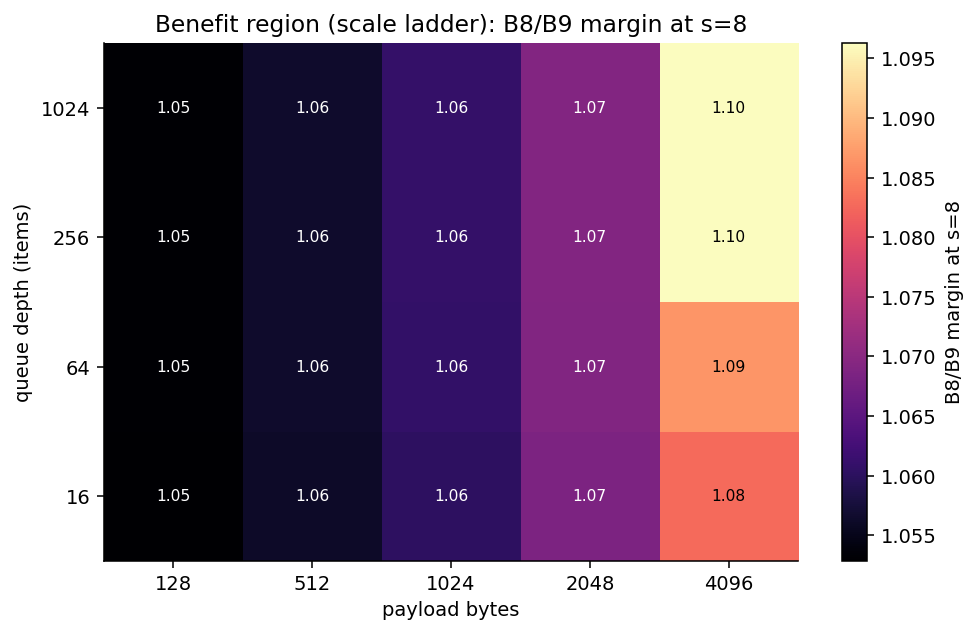
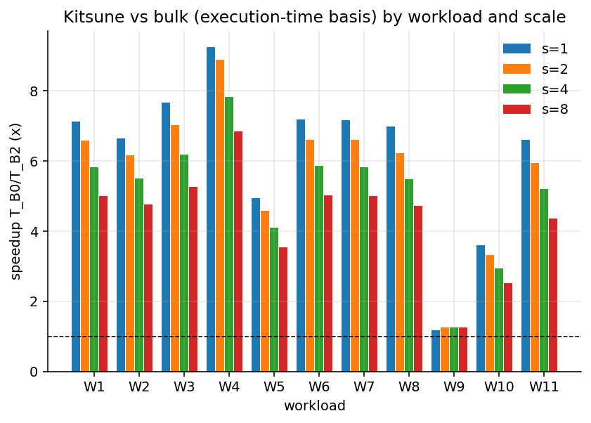

Does the Kitsune 3D-IC Story Survive System Scale?
v3 — the scale-ladder study. The v2 pilot modeled ~1/8 of a large GPU. This study reruns the entire v2 experiment battery at 1×, 2×, 4×, and 8× system size — 16 to 128 SMs, 8 to 64 MiB L2 — to answer one question: is the latency-floor story, the mechanism attribution, and the 3D-vs-planar margin scale-invariant, or an artifact of the small model? 16 experiments × 4 scales ≈1,600 simulation runs 4 platforms pre-registered predictions Verdict: same story, slightly stronger for 3D
Companion pages: v2 — the realistic-model report (the s=1 baseline of everything here) and v1 — the mesh-era study. Every number is simulated or calculated on assumed, source-anchored parameters; no hardware calibration.
Contents
1 · Executive summary
The s=1 rung is not merely similar to v2 — it is bit-identical (the scale machinery is a provable no-op at s=1, checked value-by-value against the v2 battery and byte-by-byte on the BookSim topology files), so every cross-scale difference is attributable to scale alone.
2 · How the model scales (the ladder rules)
One parameter s ∈ {1, 2, 4, 8} derives everything, in all four
simulators (custom DES, analytical, SST, BookSim). The rules separate three kinds of
quantity:
| Kind | Rule | Quantities | s=8 example |
|---|---|---|---|
| Extensive (grow with the chip) | × s | SMs, L2 slices (16s), GPCs/MPs (4s), HBM channels (4s), trunk bandwidth, L2 capacity (8s MiB), stacked banks, CTAs (weak scaling: per-agent work constant), queues, items, working set | 128 SMs, 128 slices, 64 MiB L2, 32 HBM ch., 192+192 CTAs |
| Intensive (per-node/per-item) | unchanged | per-port bandwidths (network-wall ratios invariant by construction), payload, queue depth, MLP, compute/item, partitions (2, as on A100/H100) | 24 B/cyc SM ports, 512-B payloads |
| Distance (grow with die edge) | × √s | latency spreads a/b, partition-crossing penalty, DSM spread (die area ∝ s ⇒ linear dimension ∝ √s); base round trip fixed (pipeline depth, not wire); MSHRs track the grown bandwidth-delay product | far−near gap ≈ 149 → 421 cycles |
3 · The headline verdict table
| Metric (W1 default point) | s=1 (16 SM) | s=2 | s=4 | s=8 (128 SM) | under A14 |
|---|---|---|---|---|---|
| PC — queue tax vs ideal | 38.3% | 38.6% | 41.0% | 42.9% | flat 37–38% |
| Recovery: B7 (slice-side planar) | 0.42 | 0.42 | 0.43 | 0.42 | flat |
| Recovery: B9 (DSM, co-scheduled) | 0.68 | 0.70 | 0.75 | 0.80 | — |
| Recovery: B9i (idealized DSM) | 0.79 | 0.81 | 0.83 | 0.86 | — |
| Recovery: B8 (3D per-SM) | 0.96 | 0.97 | 0.97 | 0.98 | — |
| B8 / B7 | 1.18× | 1.18× | 1.19× | 1.20× | flat 1.17× |
| B8 / B9 | 1.09× | 1.08× | 1.07× | 1.06× | — |
| Kitsune vs bulk (exec basis) | 4.3× | 4.0× | 3.5× | 3.0× | — |
| Weak-scaling efficiency (B2) | 1.00 | 0.93 | 0.82 | 0.70 | — |




4 · Attribution vs scale — distance takes over
| Idealized mechanism (recovery of the W4 gap) | s=1 | s=2 | s=4 | s=8 |
|---|---|---|---|---|
| A5 — payload transport free | 0.47 | 0.43 | 0.42 | 0.42 |
| A12 — partition penalty removed | 0.31 | 0.36 | 0.48 | 0.61 |
| A4 — metadata free | 0.29 | 0.30 | 0.31 | 0.31 |
| A2 — infinite fabric bandwidth | 0.08 | 0.07 | 0.05 | 0.05 |
| A14 — no √s distance growth | 0.00 | 0.13 | 0.30 | 0.50 |

5 · Axis by axis across the ladder


| Axis | Scale behavior |
|---|---|
| Pollution (exp204) | exactly scale-invariant: miss cliff at the same footprint ratios (0.35→0.98) at every s; bypass fixes it everywhere |
| Design ladder vs load (exp205) | ordering B7 < B9 < B8 at all loads and scales; B9 recovery climbs with s |
| Imbalance / metadata (exp206/207) | unchanged: imbalance hides the cost; no atomic saturation at any scale |
| 3D design space (exp213) | per-SM/TPC designs 0.92–0.98 at every scale; payload-only stacking ties full stacking; 3D-F global portal collapses at s=8 (below) |
| Vertical-link sensitivity (exp214) | shrinks with scale: bandwidth span 6.3%→4.5%, latency span 3.7%→2.5% — the 3D requirement gets easier |
6 · Workload grid & benefit region at scale
The two heaviest experiments (752 runs between them) close the loop: the v2 region table's structure is scale-invariant, and the maps shift exactly as the headline metrics said they would.
| Quantity (over the payload × depth plane / 11 workloads) | s=1 | s=8 | Reading |
|---|---|---|---|
| PC range | 0.37–0.64 | 0.42–0.63 | floor rises, overflow corner unchanged |
| S3D = TB2/TB8 | 1.36–1.49× | 1.40–1.53× | the 3D dividend grows with the die |
| B8/B7 over the plane | 1.16–1.18× | 1.19–1.20× | slice-side planar loses ground uniformly |
| B8/B9 over the plane | 1.08–1.18× | 1.05–1.10× | DSM keeps up in benign cells; its 4-KiB deep-queue funnel cells stay B8's largest wins |
| B8 recovery across W1–W11 | 0.81–1.01 | 0.87–1.01 | uniform at both ends of the ladder |
| B9 recovery across W1–W11 | 0.55–0.79 | 0.66–0.85 | climbs everywhere (cluster paths don't stretch) |
| Kitsune vs bulk (exec basis) | 3.6–9.3× (W9: 1.18×) | 2.5–6.8× (W9: 1.26×) | compresses with scale, stays decisively positive |

assets_s/08_region_pc_s1.png), floor shifted up.

7 · Cross-simulator checks & pre-registered predictions
| Check | Result |
|---|---|
| s=1 regression vs the v2 battery | bit-exact (exp202 vs exp102: max relative difference 0.0); BookSim s=1 topology files byte-identical to committed v2 files |
| Pre-registered analytical predictions (recorded before any DES scale run) | PC rises with s ✓ · B8/B7 grows ✓ · B8/B9 narrows ✓ — all three directions confirmed by the DES |
| SST at scale (independent codebase) | scale-stable PC (0.22–0.26 → 0.63–0.67 across payloads at every s); having no distance-growth model, SST independently reproduces the A14 bracket. A scale-up fidelity bug (single memory controller throttling s≥2) was caught and fixed with interleaved scale-proportional directories/MCs — the "memory wall" sibling of the network-wall pitfall. |
| BookSim at scale | per-TPC portals flat at every scale (s=8: 8.9→9.4 cycles over a 16× rate sweep); tight planar tree saturates earlier as s grows; global portal saturates immediately at 128 SMs |
8 · Threats to validity & reproducibility
- The √s distance growth is an assumption (real latency growth mixes wires, clocks, pipelines) — bracketed by A14; conclusions hold on both brackets, with flat instead of growing magnitudes on the optimistic one.
- Weak scaling (per-agent work constant) is one of two reasonable scaling disciplines; strong scaling is untested.
- Partitions fixed at 2; 4-partition B200-class dies would push the partition share higher (direction unambiguous, magnitude untested).
- One exp213 s=8 3D-F cell hit the cycle cap (37k/64k items) — reported as measured; longer runs would only worsen 3D-F.
- All v2 caveats carry over: no hardware calibration, synthetic workloads, B9's stated fairness favors.
Reproducibility: experiments exp201–216 with configs, seeds, and
commit hashes; launcher run_scale_battery.sh; plots regenerate via
final_plots_s.py; 29-test gate suite including scale-ladder
construction checks. Full details in the research repository's
results/SCALING_REPORT.md and DECISIONS.md (D8).